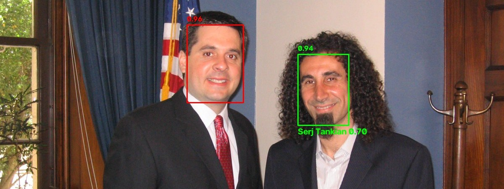

I train tool-calling agents, and measure whether it actually worked.
I work on the YandexGPT team on LLM evaluation, error analysis and
post-training (SFT, DPO/GRPO), across models from 7B to 235B parameters. There I raised
Pass@1 on TAU by 20 points and BFCL by 15 points through
systematic error analysis and better training data. On my own time I fine-tune open models
on τ-bench, break them, find out why, and build tools that keep the measurements honest.
dialogues in datasets I built, up to 50 turns each
Raised TAU and BFCL scores through systematic model error analysis and targeted dataset improvements.
Ran evaluation and post-training (SFT, DPO/GRPO) on models from 7B to 235B parameters, mainly the Qwen family, including the Qwen3-30B-A3B MoE.
Analyzed LLM performance on BFCL, TAU and TAU2: found the root causes of errors and prioritized fixes.
Built single- and multi-turn dialogue datasets for the Alice assistant's alarm scenarios, including math and time-calculation reasoning.
Built an MCP (Model Context Protocol) tool that lets Alice actually set alarms, connecting dialogue understanding to the action.
Designed and ran 20+ ML experiments comparing training approaches; translated and presented research papers to the team.
Computer Science Teacher · School 57, Moscow
2021 – 2025
Taught computer science to grades 8–11 and prepared students for CS olympiads.
Explaining algorithms and programming clearly to a technical audience, a skill I still use every day.
1C Analyst · RG-Soft
2022 – 2024
Analyzed clients' business processes and requirements; designed automation solutions in 1C.
Education
School 57, Moscow · Secondary education, advanced studies in computer science
Projects
Fine-tuning · RL · Qwen3-14B
A fine-tuning attempt that quietly broke everything
Improving Qwen3-14B on τ-bench retail with SFT, GRPO and distillation, including the runs that failed.
45.2%→2.6%
Pass rate after fine-tuning on 422 passing conversations, while training loss looked fine
98%
of training examples authenticated at the exact same message index: the shortcut the model learned
25.4%→35.1%
pass^2 on τ²-bench retail after rebuilding the teacher data around two habits
The model didn't memorize answers. It learned a positional habit: call the
authentication tool at message #4, with made-up placeholder values if the customer hadn't
given their details yet. I traced the collapse to the training set's shape, then tried three
fixes: grounded data augmentation, GRPO with τ-bench's own reward, and distillation from
Qwen3-32B.
GRPO's own eval probe got worse with training (0.55 → 0.35 → 0.30), confirmed on an independent rerun.
A gentler run didn't collapse, but a 115-task, two-trial test couldn't tell it from the starting adapter (p = 0.57). Reported as a null result.
Failure analysis of the distilled model pointed to two habits (open every order, confirm every change), which became the final dataset.
Why did my agent fail, and did my change actually help?
A rule-based failure analyzer for τ²-bench results. It labels every failed conversation with
a root cause and evidence (wrong arguments, missing or extra writes, made-up values, unneeded
hand-offs to a human), and separates agent mistakes from mistakes by the
simulated customer. It compares two runs task by task with permutation tests, bootstrap
intervals and pass^k, and has a CI gate that fails a merge only on a significant regression.
Find faces, remember people, and recognize them live from a camera, on a Mac or a Raspberry Pi.
A small command-line app built on OpenCV: YuNet detects faces,
SFace turns each one into 128 numbers, and those are matched against the
people you've enrolled. Face data stays on the device and is never committed.

Serj Tankian, learned from 4 other freely licensed photos, is recognized in green with a match score of 0.70 (0.363 or higher counts as a match). The other person wasn't enrolled, so he gets a red stranger box. Numbers on top are face-detection scores. Photo: Office of Congressman Devin Nunes, public domain, via Wikimedia Commons.